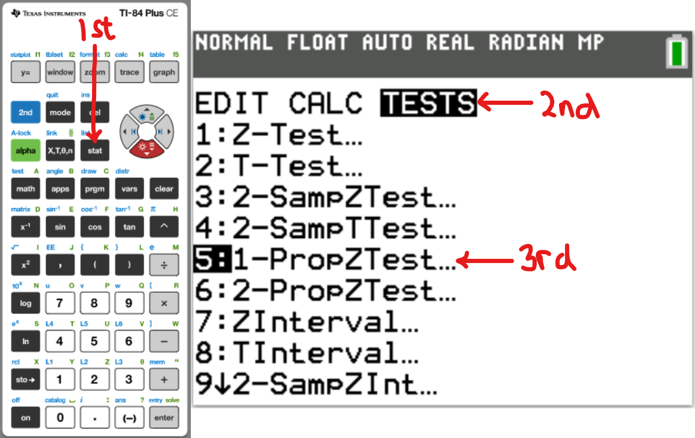
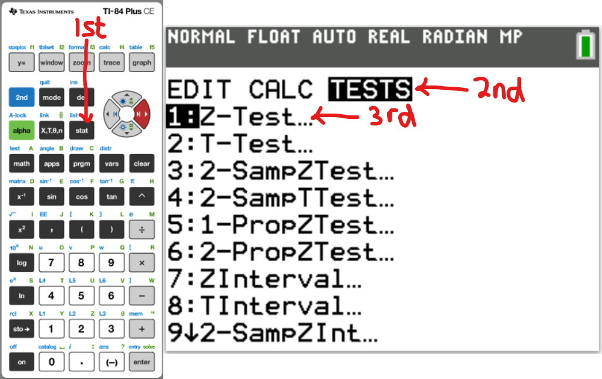
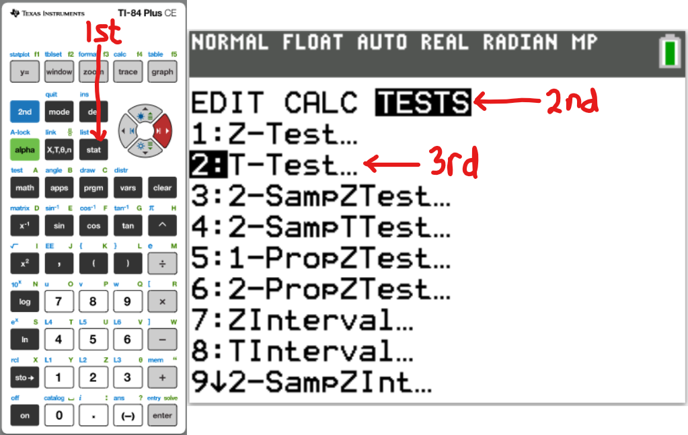
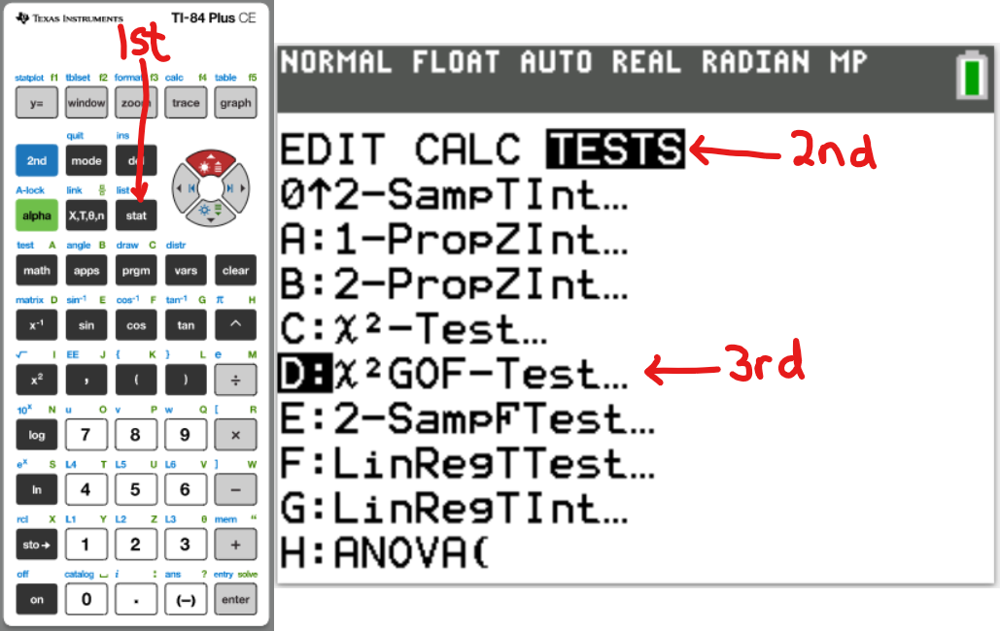

Hypothesis Tests
Welcome to Our Site
I greet you this day,
First: Review the Notes/Multimedia Resources/eText.
Second: View the Videos.
Third: Solve the questions/solved examples.
Fourth: Check your solutions with my thoroughly-explained solved examples.
Samuel Dominic Chukwuemeka (SamDom For Peace)
B.Eng., A.A.T, M.Ed., M.S
")
Objectives
Students will:
(1.) Discuss the meaning of hypothesis testing.
(2.) Explain the meaning of null and alternative hypothesis.
(3.) State the null and alternative hypothesis from a given claim.
(4.) State the type of hypothesis test.
(5.) State the population parameter being tested.
(6.) Explain the meaning of Type I and Type II errors.
(7.) Discuss social injustice related to Type I and Type II errors. (Relate Statistics to Criminology).
(8.) Identify the Type I and Type II errors from a claim.
(9.) Identify the Type I and Type II errors in social cases. (Relate Statistics to Criminology).
(10.) Discuss the three methods used in hypothesis testing.
(11.) Test the hypothesis for a claim using the Critical Value Method (Classical Approach).
(12.) Test the hypothesis for a claim using the Probability Value Method (P-value Approach).
(13.) Test the hypothesis for a claim using the Confidence Interval Method.
(14.) Write the decision of the hypothesis test based on the methods used.
(15.) Write the conclusion of the hypothesis test based on the decision.
(16.) Interpret the conclusion.
(17.) Discuss the power of a hypothesis test.
Introduction
Ask students to list the steps in the Scientific Method
Is Forming a Hypothesis one of the methods?
Is Testing the Hypothesis also one of the methods?
If you answered "yes", then you are right!
Hypothesis
Bring it to Science: A hypothesis is an unproven theory about a scientific problem.
Bring it to Statistics: A hypothesis is a claim about a population parameter.
It is a statement about a population parameter that can be tested, and may or may not true.
We are testing a claim about a population parameter using a sample statistic.
We are testing a claim about a population proportion using a sample proportion.
We are testing a claim about a population mean using a sample mean.
We are testing a claim about a population variance using a sample variance.
We are testing a claim about a population standard deviation using a sample standard deviation.
In statistical inference, measurements are made on a sample and generalizations are made to a population.
It is often difficult to measure the population, hence we measure samples. The results are then generalized to the population.
Hypothesis Test
A hypothesis test is a procedure for testing a claim about a population parameter.
Null Hypothesis
The null hypothesis is the statement that shows that the value of the population
parameter is equal to some claimed value.
It is always a statement about a population parameter.
The value in the null hypothesis is the value of the population parameter that represents the
status-quo for the current situation.
It is denoted by $H_0$
We test the null hypothesis assuming it to be true thorughout the hypothesis testing procedure, unless
observation strongly indicates otherwise.
We make a decision based on the null hypothesis.
We either reject the null the hypothesis; or we do not reject the null hypothesis (or fail to reject the
null hypothesis)
based on the result of the methods we used for the test.
Fail to reject the null hypothesis is the same as Do not reject the null hypothesis.
This does not mean that we accept the null hypothesis. It just means that we do not reject it.
Explain this concept with examples.
Then, we make a conclusion based on our decision.
Alternative Hypothesis
The alternative hypothesis is the statement that shows that the value of the population
parameter is different from the claimed value.
(different from the claimed value could mean: less than the claimed value; more
than the claimed value; or not equal to the claimed value.)
It is the research hypothesis.
It is denoted by $H_1$ or $H_A$ or $H_a$
The population parameter being different from the claimed value means that it could be less
than the claimed value; or
greater than the claimed value; or not equal to the claimed value.
If the population parameter is less than the claimed value, the hypothesis test is a
left-tailed test.
In left-tailed tests, the critical region is in the extreme left region (left tail).
$population\:\:parameter \lt claimed\:\:value \implies left-tailed\:\:test$
If the population parameter is greater than the claimed value, the hypothesis test is a
right-tailed test.
In right-tailed tests, the critical region is in the extreme right region (right tail).
$population\:\:parameter \gt claimed\:\:value \implies right-tailed\:\:test$
Left-tailed tests and Right-tailed tests are one-tailed tests.
If the population parameter is not equal to the claimed value, the hypothesis test is a
two-tailed test.
In two-tailed tests, the critical region is in the two extreme regions (two tails: left tail
and right tail).
$population\:\:parameter \ne claimed\:\:value \implies two-tailed\:\:test$
Test Statistic
The test statistic compares the observed outcome with the outcome of the null hypothesis.
It measures how far away the observed parameter lies from the hypothesized value of the population
parameter.
It is used in making a decision about the null hypothesis.
It is found by converting the sample statistic to a score with the assumption that the null hypothesis
is true.
A test statistic close to 0 indicates the obtained sample statistic is likely if the null hypothesis is
correct, which supports the null hypothesis.
A test statistic far from 0 indicates the obtained sample statistic is unlikely if the null hypothesis
is correct, which discredits the null hypothesis.
Methods used in Hypothesis Testing
There are three methods used in hypothesis testing.
Two of those methods will always lead to the same decision, and ultimaltely the same conclusion.
Those are the two main methods.
The other method may be used only when those two main methods are used.
The two main methods are:
(1.) Critical Value Method or Classical Approach or Traditional Method
If the test statistic is in the critical region, reject the null hypothesis.
If the test statistic is not in the critical region, do not reject the null hypothesis.
The critical values define the critical regions.
For a left-tailed hypothesis test, any value less than the critical value in the left-tail
is in the critical region.
For a right-tailed hypothesis test, any value greater than the critical value in the
right-tail is in the critical region.
For a two-tailed hypothesis test, any values less than the critical value in the left-tail OR
greater than the critical value in the right-tail is in the critical region.
(2.) P-Value Method or Probability Value Method
If the P-value is less than or equal to the level of significance, reject the null hypothesis.
If the P-value is greater than the level of significance, do not reject the null hypothesis.
The other method is:
(3.) Confidence Interval Method
Sometimes, we use the Confidence Interval method to test the hypothesis.
We typically use this method for: one sample with two tails; two samples with left tail; two samples
with right tail; or two samples with two tails.
If the confidence interval does not contain the value of the population parameter stated in the null
hypothesis, reject the null hypothesis.
If the confidence interval contains the value of the population parameter stated in the null
hypothesis, do not reject the null hypothesis.
For one-tailed hypothesis test: construct a confidence interval using: $CL = 1 - 2\alpha$
For two-tailed hypothesis test: construct a confidence interval using: $CL = 1 - \alpha$
NOTE:
(I.) The Classical Approach and the P-value Approach will always give the same decision
and the same conclusion regardless of the hypothesis test.
(II.) For Hypothesis test about a Population Proportion; the Confidence Interval Method may or
may not give the same decison and the same conclusion as the other two methods.
Explain this concept with examples.
(III.) For Hypothesis test about a: Population Mean, Population Variance, and Population Standard
Deviation; all three methods will always give the same decision and the same conclusion.
What if we formed our hypothesis correctly, applied the correct methods to test it, performed our
calculation correctly, and
still made a wrong decision which leads to a wrong conclusion?
Is it possible?
YES. It is possible.
Why?
We are humans.
Humans are known for making mistakes.
This leads us to....
Errors in Hypothesis Tests
There are two main types of errors we can make when testing hypothesis.
They are:
Type I Error (Rejecting a true null hypothesis)
This is the error made when we reject the null hypothesis when it is true.
Compare it to a False Positive scenario in Probability (Questions 50 and 51). Explain.
It is also similar to convicting an innocent man
Type II Error (Not rejecting a false null hypothesis)
This is the error made when we fail to reject the null hypothesis when it is false.
Compare it to a False Negative scenario in Probability (Questions 49 and 52). Explain.
It is also similar to acquiting a guilty man
Both errors are bad.
However, which one do you think is worse?
Type I error OR Type II error?
Would you convict an innocent man? OR Would you acquit a guilty man?
To further explain these errors, let us review the table.
| Truth | |||
| $H_0$ is true | $H_0$ is false | ||
| Decision | Reject $H_0$ | Type I error | Correct decision |
| Do not reject $H_0$ | Correct decision | Type II error | |
Compare this to: (You may use this to remember the main table)
| Truth | |||
| Innocent | Guilty | ||
| Verdict | Convict | Type I error | Correct decision |
| Acquit | Correct decision | Type II error | |
$\alpha$ is the probability of making a Type I error.
$\beta$ is the probability of making a Type II error.
Type I and Type II errors are inversely related.
As $\alpha$ increases, $\beta$ decreases.
As $\alpha$ decreases, $\beta$ increases.
Level of Significance (Significance Level)
Ask students to define the level of significance (when we covered Inferential Statistics)
We are going to give another definition of the level of significance (as it concerns Hypothesis
Testing).
The level of significance is the probability of making the mistake of rejecting the null
hypothesis even though it is true.
This implies that: The level of significance is the probability of making a Type I error.
It is the likelihood of obtaining a sample statistic distinct from the predicted population parameter to
the extent that it makes the predicted population parameter seem incorrect when, in fact, it is
correct.
It is denoted by α.
Though the acceptable significance level depends on the situation, 5%(0.05) is generally a good
starting point.
NOTE: If α is not given, use α = 5%
Probability Value (P-value)
The probability value (p-value) is the probability that if the null hypothesis is true, a test
statistic will have a value as extreme as or more extreme than the observed value.
In other words, the p-value measures how unusual an event is.
It is denoted by p.
A p-value lower than the significance level is small, and it discredits the null hypothesis.
A p-value greater than the significance level is not small, and it indicates that the null hypothesis
is probably true.
A p-value is small if it is less than 0.05 (because the common significance level is 0.05).
Power of a Hypothesis Test
The power of a hypothesis test is the probability of rejecting a null hypothesis when it is
false.
This implies that: The power of a hypothesis test is the probability of making the correct
decision by avoiding making a Type II error.
The power of a hypothesis test depends on the significance level, the sample size, and how wrong the
null hypothesis is.
Requirements for Testing Hypothesis about a Population Proportion
(1.) The samples are simple random samples.
(2.) There is a fixed number of trials.
(3.) The trials are independent.
(4.) Each trial results in either a success or a failure.
(5.) The probability of success or failure in any trial is the same as the probability of success or
failure in all the trials.
(6.) There are at least ten successes and ten failures.
$np \ge 10$ AND $nq \ge 10$
(7.) The sample size is no more than five percent (at most five percent) of the population size.
$n \le 5\%N$ or $n \le 0.05N$
NOTE: If the population proportion is not given, use $50\%$
If $p$ is not given, use $p = 50\%$ or $p = 0.5$
Requirements for Testing Hypothesis about Two Population Proportions
(1.) The sample proportions are from two simple random independent samples.
Independent samples means that the sample values selected from one population proportion are not related
to, or
somehow natuarlly paired or matched with the sample values from the other population.
(2.) There are at least five successes and five failures for each of the two samples.
$n\hat{p} \ge 5$ AND $n\hat{q} \ge 5$ for each of the two samples.
The two main Hypothesis Test Methods uses the pooled sample proportion.
This means that the data is pooled (sort of like "pooling resources together") to obtain the proportion
of successes
in both samples combined.
The Confidence Interval Method uses the unpooled sample proportions.
This means the two sample proportions are treated separately.
Requirements for Testing Hypothesis about a Population Mean
(1.) The samples are simple random samples.
(2.) The population is normally distributed, OR the sample size is greater than thirty ($n \gt 30$).
Independent Samples
Two samples are independent if the sample values from one population are not related to, or
somehow naturally
paired or matched with the sample values from the other population.
Example: Paul was curious about the mean credit scores of men and women.
He visited the Town of Okay, Oklahoma and gathered two random samples: the credit scores
of 50 men and 50 women.
Dependent Samples
Two samples are dependent if the sample values from one population are related to, or somehow
naturally
paired or matched with the sample values from the other population.
Each pair of sample values consists of two measurements from the same subject (such as before/after
data), or
each pair of sample values consists of matched pairs (such as husband/wife data).
Example: Paul was curious about the mean credit scores of married couples.
He visited the Community of Money, Mississippi, randomly selected 50 families, and asked for each
of the credit
scores of the husband and wife.
Requirements for Testing Hypothesis about Two Independent Population Means
When $\sigma_1$ and $\sigma_2$ are unknown, and are not assumed to be equal: AND
When $\mu_1$ and $\mu_2$ are assumed to be equal:
Use $t$ distribution
(1.) The values of the first population standard deviation and the second population standard deviation
are unknown,
and are not assumed to be equal.
(2.) The two samples are simple random samples.
(3.) The two samples are independent.
(4.) The two samples are taken from a normally distributed population, or each of the samples have sizes
greater than $30$.
When $\sigma_1$ and $\sigma_2$ are unknown, but assumed to be equal:
Use $t$ distribution and a pooled sample variance
(1.) The values of the first population standard deviation and the second population standard deviation
are unknown,
but they are assumed to be equal.
(2.) The two samples are simple random samples.
(3.) The two samples are independent.
(4.) The two samples are taken from a normally distributed population, or each of the samples have sizes
greater than $30$.
When $\sigma_1$ and $\sigma_2$ are known:
Use $z$ distribution
(1.) The values of the first population standard deviation and the second population standard deviation
are known.
(2.) The two samples are simple random samples.
(3.) The two samples are independent.
(4.) The two samples are taken from a normally distributed population, or each of the samples have sizes
greater than $30$.
Requirements for Testing Hypothesis about Two Dependent Population Means
Use $t$ distribution for Dependent Samples
(1.) The samples are dependent samples (matched pairs).
(2.) The two samples are simple random samples.
(3.) The two samples are taken from a normally distributed population, or each of the samples have sizes
greater than 30.
Requirements for Testing Hypothesis about a Population Variance OR a Population Standard Deviation
Use $\chi^2$ distribution
(1.) The samples are simple random samples.
(2.) The population is normally distributed.
Goodness-of-Fit Test, Test for Independence, and Contingency Tables
Test the hypothesis that an observed frequency distribution fits to some claimed distribution.
OR
Test the hypothesis that an observed frequency distribution fits (or conforms to) some claimed distribution.
OR
Determine if the population distribution of a categorical variable is the same as a proposed distribution.
OR
Determine whether a distribution of categorical variables is following any proposed distribution.
OR
Analyze categorical or quanlitative data that can be separated into different rows and columns of a table. OR
Compare a proposed distribution for one categorical variable with the observed sample distribution.
As noted from all the above definitions, the Goodness-of-Fit Test is used for a single categorical variable.
To determine if two categorical variables are related to each other, the Test for Independence is used.
The Chi-square Test for Independence is the hypothesis test used to determine if two categorical variables are related.
Student: Mr. C, shouldn't we use Correlation to determine if two variables are related?
Teacher: Yes, we should. Very good question.
However, the use of correlation coefficient and scatter diagrams are used to determine if two numerical variables (quantitative variables) are related.
If we want to determine the relationship between two categorical variables (qualitative variables), we use the Chi-square Test for Independence.
Student: But, how do we conduct such a test if we are not working with numbers?
Teacher: Well, we shall work with numbers. In this case, the numbers are the counts/frequencies of our observations of each categorical variable.
For two categorical variables, the frequencies of both variables usually overlap.
Hence, we have a special type of frequency table to show the frequencies.
This leads us to...
A Contingency Table is a frequency table that shows the frequency of each category in one variable, contingent upon the specific level of the other variable.
It is a one-way frequency table in which the frequencies corresponds to one variable.
For Goodness-of-Fit tests, one-way frequency table is used.
To perform a goodness-of-fit test, an expected count (value) of at least 5 is required in each cell.
The expected values in a two-way table are the number of observations in each cell if the null hypothesis were true.
This implies that: The chi-square distribution provides a good approximation to the sampling distribution of the chi-squared statistic if the expected value in each cell is 5 or higher.
The chi-squared statistic measures the amount by which the expected values (counts) differ from the observed values (counts).
It compares the observed counts to the expected counts if the proposed distribution were the true distribution.
Characteristics of the chi-squared statistic are:
(1.) The distribution allows for only positive values.
(2.) The distribution is skewed right. It is not symmetric. It is not skewed left.
(3.) The shape depends on a parameter called the degrees of freedom.
Requirements to conduct a Goodness-of-Fit test are:
(1.) The data have been randomly selected.
(2.) For each category, the expected frequency is at least 5.
Notice we said: expected frequency (not observed frequency)
(3.) The sample data consist of frequency counts for each of the different categories.
Notable Notes Regarding Goodness-of-Fit test are:
(1.) When performing a chi-square test for goodness of fit, the degrees of freedom are computed by subtracting 1 from the number of categories (number of different data cells) for the variable.
df = number of different data cells − 1
(2.) If expected frequencies are equal, then we can determine them by the formula: $E = \dfrac{n}{k}$ where n is the total number of observations and k is the number of categories.
(3.) If expected frequencies are not all equal, then we can determine them by $E = np$ for each individual category, where n is the total number of observations and p is the probability for the category.
(4.) Expected frequencies need not be whole numbers.
(5.) The chi-squared test statistic is based on differences between the observed and expected values.
(6.) If the observed values are very close to the expected values, then the chi-squared test statistic will be small and the Probability-value (P-value) will be large.
This would lead us to conclude that there is a good fit with the assumed distribution.
(7.) A small value of the chi-squared statistic implies that the expected values is close to the observed values.
In that case, there is no association between the categorical variables.
The two variables appear to be independent.
(8.) A large value of the chi-squared statistic implies that the expected values differ from the observed values by a large amount.
In that case, one should be suspicious of the null hypothesis.
There is an association between the categorical variables.
The two variables appear to be dependent.
(9.) If the observed and expected frequencies are not close, the chi-square test statistic will be large and the Probability-value (P-value) will be small.
This leads us to conclude that there is not a good fit with the assumed distribution.
(10.) The null hypothesis for a goodness-of-fit test is always that the population distribution of the variable is the same as the proposed distribution.
H0: The frequency counts agree with the claimed distribution
H1: The frequency counts do not agree with the claimed distribution.
(11.) The p-value for a chi-squared test for goodness of fit is the probability that, if the null hypothesis is true, a chi-square statistic will be equal to or greater than the observed value.
So the relevant area is the area to the right of the test statistic.
A Contingency Table is a frequency table that shows the frequency of each category in one variable, contingent upon the specific level of the other variable.
It is a two-way frequency table in which the frequencies correspond to two variables.
For Test of Independence, two-way frequency table is used.
Requirements for Test for Independence between the row variable and column variable in a Contingency table are:
(1.) The null hypothesis is that the row and column variables are independent of each other.
(2.) The number of degrees of freedom is (r − 1)(c − 1), where r is the number of rows and c is the number of columns.
(3.) Tests of independence with a contingency table are always right-tailed.
Definitions
A hypothesis test is a procedure for testing a claim about a population parameter.
The null hypothesis is the statement that shows that the value of the population parameter is equal to some claimed value.
The alternative hypothesis is the statement that shows that the value of the population parameter is different from the claimed value.
A hypothesis test is a left-tailed test if the population parameter is less than the claimed value.
A hypothesis test is a right-tailed test if the population parameter is greater than the claimed value.
A hypothesis test is a two-tailed test if the population parameter is not equal than he claimed value.
The test statistic is a used in making a decision about the null hypothesis.
Type I Error is the error made when we reject the null hypothesis when it is true.
Type II Error is the error made when we fail to reject the null hypothesis when it is false.
The level of significance is the probability of making the mistake of rejecting the null hypothesis when it is true.
This implies that: The level of significance is the probability of making a Type I error.
The power of a hypothesis test is the probability of rejecting a null hypothesis when it is false.
This implies that: The power of a hypothesis test is the probability of making the correct decision by avoiding making a Type II error.
Two samples are independent if the sample values from one population are not related to, or somehow naturally paired or matched with the sample values from the other population.
Two samples are dependent if the sample values from one population are related to, or somehow naturally paired or matched with the sample values from the other population.
The probability value (P-value) is the probability of obtaining the observed results of a hypothesis test, assuming the null hypothesis is true.
A smaller p-value indicates a stronger evidence in favor of the alternative hypothesis.
Symbols and Meanings
- $z_{\dfrac{\alpha}{2}}$ is the critical $z$ value
- $z_{\dfrac{\alpha}{2}}$ is the $z-score$ separating an area/probability of $\dfrac{\alpha}{2}$ in the right tail
- $-z_{\dfrac{\alpha}{2}}$ is the $z-score$ separating an area/probability of $\dfrac{\alpha}{2}$ in the left tail
- $z_{\alpha}$ is the $z-score$ separating an area/probability of $\alpha$ in the right tail
- $-z_{\alpha}$ is the $z-score$ separating an area/probability of $\alpha$ in the left tail
- $t_{\dfrac{\alpha}{2}}$ is the critical $t$ value
- $t_{\dfrac{\alpha}{2}}$ is the critical $t$ separating an area/probability of $\dfrac{\alpha}{2}$ in the right tail
- $-t_{\dfrac{\alpha}{2}}$ is the critical $t$ separating an area/probability of $\dfrac{\alpha}{2}$ in the left tail
- $z$ is the test statistic for estimating population proportion
- $z$ is the test statistic for estimating population mean (based on some conditions)
- $t$ is the test statistic for estimating population mean (based on some conditions)
- $\chi ^2$ is the test statistic for estimating population variance
- $\chi ^2$ is the test statistic for estimating population standard deviation
- $\chi ^2$ is the test statistic for Goodness-of-Fit tests
- $\alpha$ is the level of significance
- $\alpha$ is the probability of making a Type I error
- $\beta$ is the probability of making a Type II error
- $CL$ is the level of confidence
- $df$ is the degrees of freedom
- $P-value$ is the probability value
- $\hat{p}$ is the sample proportion
- $x$ is the number of individuals with the specified characteristics
- $n$ is the sample size
- $n$ is the total number of trials
- $p$ is the population proportion
- $q$ is the complement of the population proportion
- $\overline{p}$ is the pooled sample proportion
- $\overline{q}$ is the complement of the pooled sample proportion
- $s$ is the sample standard deviation
- $s^2$ is the sample variance
- $\sigma$ is the population standard deviation
- $\sigma^2$ is the population variance
- $x_1$ is the number of successes in the first sample
- $x_2$ is the number of successes in the second sample
- $\hat{p_1}$ is the first sample proportion
- $\hat{p_2}$ is the second sample proportion
- $\hat{q_1}$ is the complement of the first sample proportion
- $\hat{q_2}$ is the complement of the second sample proportion
- $\hat{p_c}$ is the critical value of the sample proportion
- $p_a$ is the alternative proportion
- $q_a$ is the complement of the alternative proportion
- $p_1$ is the first population proportion
- $p_2$ is the second population proportion
- $SE$ is the standard error
- $E$ is the margin of error
- $\overline{x_1}$ is the first sample mean
- $\overline{x_2}$ is the second sample mean
- $\overline{x_c}$ is the critical value of the sample mean
- $\overline{x_a}$ is the alternative mean
- $\mu_1$ is the first population mean
- $\mu_2$ is the second population mean
- $s_1$ is the first sample standard deviation
- $s_2$ is the second sample standard deviation
- $\sigma_1$ is the first population standard deviation
- $\sigma_2$ is the second population standard deviation
- $s_1^2$ is the first sample variance
- $s_2^2$ is the second sample variance
- $s_p^2$ is the pooled sample variance
- $\sigma_1^2$ is the first population variance
- $\sigma_2^2$ is the second population variancen
- $d$ is the individual difference between the two values in a single matched pair
- $\mu_d$ is the mean of the differences for the population of all matched pairs of data
- $\bar{d}$ is the mean value of the differences for the paired sample data
- $s_d$ is the standard deviation of the differences for the paired sample data
- $n_d$ is number of pairs of sample data
- $O$ is the observed frequence of an outcome (found from the sample data)
- $E$ is the expected frequency of an outcome (found by assuming the distribution as claimed)
- $k$ is the number of different categories
- $r$ is the sample Pearson's linear correlation coefficient
- $\rho$ is the population Pearson's linear correlation coefficient
Formulas
Proportion is given as a decimal or a percentage.
If the significance level, $\alpha$ is not given, use $\alpha = 5\%$
The null hypothesis should always have the 'equal' symbol
The alternative hypothesis has the 'unequal' symbol (less than, greater than, not equal to)
Probability of making a Type II error
To calculate the probability of making a Type II error, $\beta$
As applicable:
First Step:
Solve for the critical proportion using the critical $z$ OR
Solve for the critical mean using the critical $z$ OR
Solve for the critical mean using the critical $t$
$
(1.)\:\: z_{\dfrac{\alpha}{2}} = \dfrac{\hat{p_c} - p}{\sqrt{\dfrac{pq}{n}}} \\[10ex]
(2.)\:\: \hat{p_c} = z_{\dfrac{\alpha}{2}} * \sqrt{\dfrac{pq}{n}} + p \\[7ex]
(3.)\:\: z_{\dfrac{\alpha}{2}} = \dfrac{\overline{x}_c - \mu}{\dfrac{\sigma}{\sqrt{n}}} \\[10ex]
(4.)\:\: \overline{x_c} = z_{\dfrac{\alpha}{2}} * \dfrac{\sigma}{\sqrt{n}} + \mu \\[7ex]
(5.)\:\: t_{\dfrac{\alpha}{2}} = \dfrac{\overline{x}_c - \mu}{\dfrac{s}{\sqrt{n}}} \\[10ex]
(6.)\:\: \overline{x_c} = t_{\dfrac{\alpha}{2}} * \dfrac{s}{\sqrt{n}} + \mu \\[7ex]
$
Second Step:
Solve for the $z$ score using the alternative proportion OR
Solve for the $z$ score using the alternative mean OR
Solve for the $t$ score using the alternative mean
$
(7.)\:\: z = \dfrac{\hat{p_c} - p_a}{\sqrt{\dfrac{p_a * q_a}{n}}} \\[10ex]
(8.)\:\: z = \dfrac{\overline{x}_a - \mu}{\dfrac{\sigma}{\sqrt{n}}} \\[10ex]
(9.)\:\: t = \dfrac{\overline{x}_a - \mu}{\dfrac{s}{\sqrt{n}}} \\[10ex]
$
Third Step:
Calculate the probability of $z$ OR
Calculate the probability of $t$
Power of a Hypothesis Test
$ (1.)\:\: P_{hyp} = 1 - \beta \\[3ex] $
Hypothesis Test about a Population Proportion
If $p$ is not given, use $p = 50\%$
$ (1.)\:\: \hat{p} = \dfrac{x}{n} \\[7ex] (2.)\:\: p + q = 1 \\[5ex] (3.)\:\: z = \dfrac{\hat{p} - p}{\sqrt{\dfrac{pq}{n}}} \\[10ex] $
Hypothesis Test about Two Population Proportions
The pooled sample proportion is used.
This means that the data is pooled to obtain the proportion of successess in both samples combined
rather than separately (unpooled).
$ (1.)\:\: \hat{p_1} = \dfrac{x_1}{n_1} \\[7ex] (2.)\:\: \hat{p_2} = \dfrac{x_2}{n_2} \\[7ex] (3.)\:\: \overline{p} = \dfrac{x_1 + x_2}{n_1 + n_2} \\[7ex] (4.)\:\: \overline{q} = 1 - \overline{p} \\[5ex] (5.)\:\: z = \dfrac{(\hat{p_1} - \hat{p_2}) - (p_1 - p_2)}{\sqrt{\dfrac{\overline{p} * \overline{q}}{n_1} + \dfrac{\overline{p} * \overline{q}}{n_2}}} \\[10ex] $
Because this is a pooled sample, we assume the null hypothesis as:
$
H_0:\:\: p_1 = p_2 \:\:OR \\[3ex]
H_0:\:\: p_1 - p_2 = 0 \\[3ex]
\implies \\[3ex]
(6.)\:\: z = \dfrac{\hat{p_1} - \hat{p_2}}{\sqrt{\dfrac{\overline{p} * \overline{q}}{n_1} +
\dfrac{\overline{p} * \overline{q}}{n_2}}} \\[10ex]
(7.)\:\: SE = \sqrt{\dfrac{\overline{p} * \overline{q}}{n_1} + \dfrac{\overline{p} *
\overline{q}}{n_2}} \\[7ex]
$
Confidence Interval Method about Two Population Proportions
The unpooled sample proportion is used.
This means that the two sample proportions are treated separately.
$
(1.)\:\: E = z_{\dfrac{\alpha}{2}} * \sqrt{\dfrac{\hat{p_1} * \hat{q_1}}{n_1} + \dfrac{\hat{p_2} *
\hat{q_2}}{n_2}} \\[7ex]
$
The confidence interval method of the difference of the population proportions is:
$(\hat{p_1} - \hat{p_2}) - E \lt (p_1 - p_2) \lt (\hat{p_1} - \hat{p_2}) + E \\[3ex]$
Hypothesis Test about a Population Mean
When $\sigma$ is known:
$
(1.)\:\: z = \dfrac{\overline{x} - \mu}{\dfrac{\sigma}{\sqrt{n}}} \\[10ex]
$
When $\sigma$ is NOT known:
$
(2.)\:\: t = \dfrac{\bar{x} - \mu}{\dfrac{s}{\sqrt{n}}} \\[10ex]
(3.)\:\: df = n - 1 \\[3ex]
$
Hypothesis Test about Two Independent Population Means
Two samples are independent if the sample values from one population are not related to, or
natuarlly paired or paired with the sample values from the other population.
When t distribution is used
When $\sigma_1$ and $\sigma_2$ are unknown; and are NOT assumed to be equal
$
(1.)\:\: t = \dfrac{(\overline{x_1} - \overline{x_2}) - (\mu_1 - \mu_2)}{\sqrt{\dfrac{s_1^2}{n_1} +
\dfrac{s_2^2}{n_2}}} \\[10ex]
$
When $\mu_1 - \mu_2$ is assumed to be $0$:
$
(2.)\:\: t = \dfrac{\overline{x_1} - \overline{x_2}}{\sqrt{\dfrac{s_1^2}{n_1} + \dfrac{s_2^2}{n_2}}}
\\[10ex]
$
Simple Estimate of the Degrees of Freedom:
$
(3.)\:\: df = the\:\:smaller\:\:value\:\:of\:\:(n_1 - 1) \:\:and\:\: (n_2 - 1) \\[3ex]
$
Difficult Estimate (More Accurate Estimate) of the Degrees of Freedom:
$
(4.)\:\: df = \dfrac{(A + B)^2}{\dfrac{A^2}{n_1 - 1} + \dfrac{B^2}{n_2 - 1}} \\[10ex]
(5.)\:\: A = \dfrac{s_1^2}{n_1} \\[7ex]
(6.)\:\: B = \dfrac{s_2^2}{n_2} \\[7ex]
$
When t distribution is used
When $\sigma_1$ and $\sigma_2$ are unknown; and are assumed to be equal
The pooled dample variance is used.
$
(1.)\:\: t = \dfrac{(\overline{x_1} - \overline{x_2}) - (\mu_1 - \mu_2)}{\sqrt{\dfrac{s_p^2}{n_1} +
\dfrac{s_p^2}{n_2}}} \\[10ex]
(2.)\:\: s_p^2 = \dfrac{s_1^2(n_1 - 1) + s_2^2(n_2 - 1)}{(n_1 - 1)(n_2 - 1)} \\[7ex]
(3.)\:\: s_p = \sqrt{\dfrac{s_1^2(n_1 - 1) + s_2^2(n_2 - 1)}{(n_1 - 1)(n_2 - 1)}} \\[7ex]
(4.)\:\: df = n_1 + n_2 - 2 \\[3ex]
$
When $z$ distribution is used
When $\sigma_1$ and $\sigma_2$ are known
$
(1.)\:\: z = \dfrac{(\overline{x_1} - \overline{x_2}) - (\mu_1 -
\mu_2)}{\sqrt{\dfrac{\sigma_1^2}{n_1} + \dfrac{\sigma_2^2}{n_2}}} \\[10ex]
$
Confidence Interval about Two Independent Population Means
When $\sigma_1$ and $\sigma_2$ are unknown; and are NOT assumed to be equal
The confidence interval method of the difference of the population means is:
$
(1.)\:\: Confidence\:\:Interval\:\:is:\:\:(\overline{x_1} - \overline{x_2}) - E \lt (\mu_1 - \mu_2)
\lt (\overline{x_1} - \overline{x_2}) + E \\[5ex]
(2.)\:\: E = t_{\dfrac{\alpha}{2}} * \sqrt{\dfrac{s_1^2}{n_1} + \dfrac{s_2^2}{n_2}} \\[7ex]
$
Simple Estimate of the Degrees of Freedom:
$
(3.)\:\: df = the\:\:smaller\:\:value\:\:of\:\:(n_1 - 1) \:\:and\:\: (n_2 - 1) \\[3ex]
$
Difficult Estimate (More Accurate Estimate) of the Degrees of Freedom:
$
(4.)\:\: df = \dfrac{(A + B)^2}{\dfrac{A^2}{n_1 - 1} + \dfrac{B^2}{n_2 - 1}} \\[10ex]
(5.)\:\: A = \dfrac{s_1^2}{n_1} \\[7ex]
(6.)\:\: B = \dfrac{s_2^2}{n_2} \\[7ex]
$
When $\sigma_1$ and $\sigma_2$ are unknown; and are NOT assumed to be equal
The confidence interval method of the difference of the population means is:
$
(1.)\:\: Confidence\:\:Interval\:\:is:\:\:(\overline{x_1} - \overline{x_2}) - E \lt (\mu_1 - \mu_2)
\lt (\overline{x_1} - \overline{x_2}) + E \\[5ex]
(2.)\:\: E = t_{\dfrac{\alpha}{2}} * \sqrt{\dfrac{s_p^2}{n_1} + \dfrac{s_p^2}{n_2}} \\[7ex]
(3.)\:\: s_p^2 = \dfrac{s_1^2(n_1 - 1) + s_2^2(n_2 - 1)}{(n_1 - 1)(n_2 - 1)} \\[7ex]
(4.)\:\: s_p = \sqrt{\dfrac{s_1^2(n_1 - 1) + s_2^2(n_2 - 1)}{(n_1 - 1)(n_2 - 1)}} \\[7ex]
(5.)\:\: df = n_1 + n_2 - 2 \\[3ex]
$
When $z$ distribution is used
When $\sigma_1$ and $\sigma_2$ are known
The confidence interval method of the difference of the population means is:
$
(1.)\:\: Confidence\:\:Interval\:\:is:\:\:(\overline{x_1} - \overline{x_2}) - E \lt (\mu_1 - \mu_2)
\lt (\overline{x_1} - \overline{x_2}) + E \\[5ex]
(2.)\:\: E = z_{\dfrac{\alpha}{2}} * \sqrt{\dfrac{\sigma_1^2}{n_1} + \dfrac{\sigma_2^2}{n_2}}
\\[7ex]
$
Hypothesis Test about Two Dependent Population Means
Two samples are dependent if the sample values are somehow matched, where the matching is
based on some meaningful
relationship.
Each pair of sample values consists of two measurements from the same subject (such as
before/after data), or each pair
of sample values consists of matched pairs (such as husband/wife data).
$
(1.)\:\: t = \dfrac{\overline{d} - \mu_d}{\dfrac{s_d}{\sqrt{n}}} \\[7ex]
(2.)\:\: df = n - 1 \\[3ex]
$
Confidence Interval about Two Dependent Population Means
The confidence interval method of the difference of the population means is:$ (1.)\:\: Confidence\:\:Interval\:\:is:\:\: \overline{d} - E \lt \mu_d \lt \overline{d} + E \\[5ex] (2.)\:\: E = t_{\dfrac{\alpha}{2}} * \dfrac{s_d}{\sqrt{n}} \\[5ex] $
Hypothesis Test about a Population Standard Deviation
Normally Distributed Population
$
(1.)\;\; \chi^2 = \dfrac{s^2(n - 1)}{\sigma^2} \\[5ex]
$
Goodness-of-Fit Test
$ (1.)\:\: \chi^2 = \Sigma \dfrac{(O - E)^2}{E} \\[7ex] (2.)\:\: df = k - 1 \\[3ex] $
Correlation
Two Samples
First Formula for the Pearson Correlation Coefficient
$
(1.)\:\: r = \dfrac{\Sigma \left(\dfrac{x - \overline{x}}{s_x}\right)\left(\dfrac{y -
\overline{y}}{s_y}\right)}{n - 1} \\[10ex]
(2.)\:\: r = \dfrac{\Sigma(z_x)(z_y)}{n - 1} \\[5ex]
$
Second Formula for the Pearson Correlation Coefficient
$
(1.)\:\: r = \dfrac{n(\Sigma xy) - (\Sigma x)(\Sigma y)}{\sqrt{n(\Sigma x^2) - (\Sigma x)^2} *
\sqrt{n(\Sigma y^2) - (\Sigma y)^2}} \\[7ex]
$
Critical Value of the Correlation Coefficient (Use for Critical Value method)
$
(1.)\:\: Critical\:\:value\:\:of\:\:r = \sqrt{\dfrac{t^2}{t^2 + df}} \\[7ex]
(where\:\:t-values\:\:are\:\:from\:\:the\:\:Critical\:\:t\:\:Table) \\[3ex]
(2.)\:\: df = n - 2 \\[3ex]
$
Test Statistic of the Correlation Coefficient (Use for P-value method)
$
(1.)\:\: t = \dfrac{r}{\sqrt{\dfrac{1 - r^2}{n - 2}}} \\[7ex]
$
Decision, Conclusion, and Interpretation
NOTE:
(1.) Use $z$ or $t$ as necessary
(2.) For the interpretations, replace proportion with mean as applicable.
Unless your professor says otherwise:
(3.) Use only these terms for the Decision
(a.) Reject the null hypothesis
(b.) Do not reject the null hypothesis.
(c.) Fail to reject the null hypothesis.
(b.) and (c.) means the same thing.
Keep in mind that we are dealing with the null hypothesis
You either reject the null hypothesis or you do not reject the null hypothesis.
We do not accept the null hypothesis.
We just do not reject it.
The fact that we do not reject it does not mean that we accept it.
Hence, the need for the conclusion and the interpretation.
(4.) Use only these terms for the Conclusion
(a.) There is sufficient evidence to support/warrant the rejection of the null hypothesis.
(b.) There is sufficient evidence to reject the null hypothesis.
(c.) There is sufficient evidence to support/warrant the claim of the alternative hypothesis.
(d.) There is insufficient evidence to support/warrant the rejection of the null hypothesis.
(e.) There is insufficient evidence to reject the null hypothesis.
(f.) There is insufficient evidence to support/warrant the claim of the alternative hypothesis.
(a.), (b.), and (c.) means the same thing.
(d.), (e.), and (f.) means the same thing.
IMPORTANT:
(1.) For:
Hypothesis Test about a Population Proportion OR
Hypothesis Test about a Population Mean
Use $z$ table
(2.) For:
Hypothesis Test about a Population Mean (whose Population Standard Deviation is not known)
Use $t$ table
(3.) For:
Hypothesis Test about a Population Variance OR
Hypothesis Test about a Population Standard Deviation
use $\chi^2$ table
Critical Value Method or Classical Approach
Left-tailed Tests
Find $-z_{\dfrac{\alpha}{2}}$
Condition $1$
If $z \lt -z_{\dfrac{\alpha}{2}}$, it falls in the critical region
Decision: Reject the null hypothesis
Conclusion: There is sufficient evidence to support the claim of the alternative
hypothesis
Interpretation for One-Sample: The population proportion for the variable is
significantly less than the stated value.
Interpretation for Two-Samples: The population proportion for the first sample is
significantly less than the
population proportion for the second sample
Condition $2$
If $z \gt -z_{\dfrac{\alpha}{2}}$, it does not fall in the critical region
Decision: Do not reject the null hypothesis
Conclusion: There is insufficient evidence to support the claim of the alternative
hypothesis
Interpretation for One-Sample: The population proportion for the variable is NOT
significantly less than the stated value.
Interpretation for Two-Samples: The population proportion for the first sample is
NOT significantly less than the
population proportion for the second sample
Right-tailed Tests
Find $z_{\dfrac{\alpha}{2}}$
Condition $1$
If $z \gt z_{\dfrac{\alpha}{2}}$, it falls in the critical region
Decision: Reject the null hypothesis
Conclusion: There is sufficient evidence to support the claim of the alternative
hypothesis
Interpretation for One-Sample: The population proportion for the variable is
significantly more than the stated value.
Interpretation for Two-Samples: The population proportion for the first sample is
significantly more than the
population proportion for the second sample
Condition $2$
If $z \lt z_{\dfrac{\alpha}{2}}$, it does not fall in the critical region
Decision: Do not reject the null hypothesis
Conclusion: There is insufficient evidence to support the claim of the alternative
hypothesis
Interpretation for One-Sample: The population proportion for the variable is NOT
significantly more than the stated value.
Interpretation for Two-Samples: The population proportion for the first sample is
NOT significantly more than the
population proportion for the second sample
Two-tailed Tests
Find $-z_{\dfrac{\alpha}{2}}$ and $z_{\dfrac{\alpha}{2}}$
Condition $1$
If $z \lt -z_{\dfrac{\alpha}{2}}$ OR $z \gt z_{\dfrac{\alpha}{2}}$, it falls in the critical region
Decision: Reject the null hypothesis
Conclusion: There is sufficient evidence to support the rejection of the null
hypothesis
Interpretation for One-Sample: The population proportion for the variable is
significantly different than the stated value.
Interpretation for Two-Samples: The population proportion for the first sample is
significantly different from the
population proportion for the second sample
Condition $2$
If $-z_{\dfrac{\alpha}{2}} \lt z \lt z_{\dfrac{\alpha}{2}}$, it does not fall in the critical region
Decision: Do not reject the null hypothesis
Conclusion: There is insufficient evidence to warrant the rejection of the null
hypothesis
Interpretation for One-Sample: The population proportion for the variable is NOT
significantly different than the stated value.
Interpretation for Two-Samples: The population proportion for the first sample is
NOT significantly different from the
population proportion for the second sample
P-Value (Probability-Value) Approach
Left-tailed Tests
Find $P(z \lt -test\:\:statistic)$
Condition $1$
If $P-value \le \alpha$
Decision: Reject the null hypothesis
Conclusion: There is sufficient evidence to support the claim of the alternative
hypothesis
Interpretation for One-Sample: The population proportion for the variable is
significantly less than the stated value.
Interpretation for Two-Samples: The population proportion for the first sample is
significantly less than the
population proportion for the second sample
Condition $2$
If $P-value \gt \alpha$
Decision: Do not reject the null hypothesis
Conclusion: There is insufficient evidence to support the claim of the alternative
hypothesis
Interpretation for One-Sample: The population proportion for the variable is NOT
significantly less than the stated value.
Interpretation for Two-Samples: The population proportion for the first sample is
NOT significantly less than the
population proportion for the second sample
Right-tailed Tests
Find $P(z \gt test\:\:statistic)$
Condition $1$
If $P-value \le \alpha$
Decision: Reject the null hypothesis
Conclusion: There is sufficient evidence to support the claim of the alternative
hypothesis
Interpretation for One-Sample: The population proportion for the variable is
significantly more than the stated value.
Interpretation for Two-Samples: The population proportion for the first sample is
significantly more than the
population proportion for the second sample
Condition $2$
If $P-value \gt \alpha$
Decision: Do not reject the null hypothesis
Conclusion: There is insufficient evidence to support the claim of the alternative
hypothesis
Interpretation for One-Sample: The population proportion for the variable is NOT
significantly more than the stated value.
Interpretation for Two-Samples: The population proportion for the first sample is
NOT significantly more than the
population proportion for the second sample
Two-tailed Tests
Find $P(z \lt -test\:\:statistic) + P(z \gt test\:\:statistic)$
Condition $1$
If $P-value \le \alpha$
Decision: Reject the null hypothesis
Conclusion: There is sufficient evidence to support the rejection of the null
hypothesis
Interpretation for One-Sample: The population proportion for the variable is
significantly different than the stated value.
Interpretation for Two-Samples: The population proportion for the first sample is
significantly different from the
population proportion for the second sample
Condition $2$
If $P-value \gt \alpha$
Decision: Do not reject the null hypothesis
Conclusion: There is insufficient evidence to warrant the rejection of the null
hypothesis
Interpretation for One-Sample: The population proportion for the variable is NOT
significantly different than the stated value.
Interpretation for Two-Samples: The population proportion for the first sample is
NOT significantly different from the
population proportion for the second sample
Confidence Interval Method
One Sample: Two-Tailed Tests
Construct a confidence interval using: $CL = 1 - 2\alpha$
Determine the confidence interval using an appropriate confidence level
Condition $1$
If the confidence interval does NOT the value of the population parameter stated in the null
hypothesis:
Decision: Reject the null hypothesis
Conclusion: There is sufficient evidence to warrant the rejection of the null
hypothesis
Interpretation: The confidence interval does NOT contain the value of the
population parameter stated in
the null hypothesis
Condition $2$
If the confidence interval contains the value of the population parameter stated in the null
hypothesis:
Decision: Do not reject the null hypothesis
Conclusion: There is insufficient evidence to support the claim of the alternative
hypothesis
Interpretation: The confidence interval contains the value of the population parameter
stated in
the null hypothesis
Two Samples: Left-tailed Tests
Construct a confidence interval using: $CL = 1 - \alpha$
Determine the confidence interval using an appropriate confidence level
Condition $1$
If $Lower\:\:Confidence\:\:Limit \lt 0$ AND $Upper\:\:Confidence\:\:Limit \lt 0$:
the confidence interval does not contain $0$
Decision: Reject the null hypothesis
Conclusion: There is sufficient evidence to support the claim of the alternative
hypothesis
Interpretation: The population proportion for the first sample is significantly
less than the
population proportion for the second sample
Condition $2$
If $Lower\:\:Confidence\:\:Limit \lt 0$ AND $Upper\:\:Confidence\:\:Limit \gt 0$:
the confidence interval contains $0$
Decision: Do not reject the null hypothesis
Conclusion: There is insufficient evidence to support the claim of the alternative
hypothesis
Interpretation: The population proportion for the first sample is NOT significantly
less than the
population proportion for the second sample
Two Samples: Right-tailed Tests
Construct a confidence interval using: $CL = 1 - \alpha$
Determine the confidence interval using an appropriate confidence level
Condition $1$
If $Lower\:\:Confidence\:\:Limit \gt 0$ AND $Upper\:\:Confidence\:\:Limit \gt 0$:
the confidence interval does not contain $0$
Decision: Reject the null hypothesis
Conclusion: There is sufficient evidence to support the claim of the alternative
hypothesis
Interpretation: The population proportion for the first sample is significantly
more than the
population proportion for the second sample
Condition $2$
If $Lower\:\:Confidence\:\:Limit \lt 0$ AND $Upper\:\:Confidence\:\:Limit \gt 0$:
the confidence interval contains $0$
Decision: Do not reject the null hypothesis
Conclusion: There is insufficient evidence to support the claim of the alternative
hypothesis
Interpretation: The population proportion for the first sample is NOT significantly
more than the
population proportion for the second sample
Two Samples: Two-tailed Tests
Construct a confidence interval using: $CL = 1 - \alpha$
Determine the confidence interval using an appropriate confidence level
Condition $1$
If $Lower\:\:Confidence\:\:Limit \lt 0$ AND $Upper\:\:Confidence\:\:Limit \lt 0$ OR
$Lower\:\:Confidence\:\:Limit \gt 0$ AND $Upper\:\:Confidence\:\:Limit \gt 0$
the confidence interval does not contain $0$
Decision: Reject the null hypothesis
Conclusion: There is sufficient evidence to warrant the rejection of the null
hypothesis
Interpretation: The population proportion for the first sample is significantly
different from the
population proportion for the second sample
Condition $2$
If $Lower\:\:Confidence\:\:Limit \lt 0$ AND $Upper\:\:Confidence\:\:Limit \gt 0$:
the confidence interval contains $0$
Decision: Do not reject the null hypothesis
Conclusion: There is insufficient evidence to warrant the rejection of the null
hypothesis
Interpretation: The population proportion for the first sample is NOT significantly
different from the
population proportion for the second sample
Correlation: Critical Value Method or Classical Approach
Two Samples: Left-tailed Tests
Calculate the Pearson correlation coefficient
Calculate the critical value of the Pearson correlation coefficient
Condition $1$
If $r \lt 0$ AND $r \lt Critical\:\:value\:\:of\:\:r$:
Decision: Reject the null hypothesis
Conclusion: There is sufficient evidence to support the claim of a negative linear
correlation
Condition $2$
If $r \lt 0$ AND $r \gt Critical\:\:value\:\:of\:\:r$:
Decision: Do not reject the null hypothesis
Conclusion: There is insufficient evidence to support the claim of a negative linear
correlation
Two Samples: Right-tailed Tests
Calculate the Pearson correlation coefficient
Calculate the critical value of the Pearson correlation coefficient
Condition $1$
If $r \gt 0$ AND $r \gt Critical\:\:value\:\:of\:\:r$:
Decision: Reject the null hypothesis
Conclusion: There is sufficient evidence to support the claim of a positive linear
correlation
Condition $2$
If $r \gt 0$ AND $r \lt Critical\:\:value\:\:of\:\:r$:
Decision: Do not reject the null hypothesis
Conclusion: There is insufficient evidence to support the claim of a positive linear
correlation
Two Samples: Two-tailed Tests
Calculate the Pearson correlation coefficient
Calculate the critical value of the Pearson correlation coefficient
Condition $1$
If $|r| \gt Critical\:\:value\:\:of\:\:r$:
Decision: Reject the null hypothesis
Conclusion: There is sufficient evidence to support the claim of a linear correlation
Condition $2$
If $|r| \le Critical\:\:value\:\:of\:\:r$:
Decision: Do not reject the null hypothesis
Conclusion: There is insufficient evidence to support the claim of a linear
correlation
Correlation: P-Value Method
Two Samples: Left-tailed Tests
Calculate the Pearson correlation coefficient
Calculate the test statistic
Determine the probability value (p-value) of the test statistic
Condition $1$
If $r \lt 0$ AND $P-value \le \alpha$:
Decision: Reject the null hypothesis
Conclusion: There is sufficient evidence to support the claim of a negative linear
correlation
Condition $2$
If $r \lt 0$ AND $P-value \gt \alpha$:
Decision: Do not reject the null hypothesis
Conclusion: There is insufficient evidence to support the claim of a negative linear
correlation
Two Samples: Right-tailed Tests
Calculate the Pearson correlation coefficient
Calculate the test statistic
Determine the probability value (p-value) of the test statistic
Condition $1$
If $r \gt 0$ AND $P-value \le \alpha$:
Decision: Reject the null hypothesis
Conclusion: There is sufficient evidence to support the claim of a positive linear
correlation
Condition $2$
If $r \gt 0$ AND $P-value \gt \alpha$:
Decision: Do not reject the null hypothesis
Conclusion: There is insufficient evidence to support the claim of a positive linear
correlation
Two Samples: Two-tailed Tests
Calculate the Pearson correlation coefficient
Calculate the test statistic
Determine the probability value (p-value) of the test statistic
Condition $1$
If $P-value \le \alpha$:
Decision: Reject the null hypothesis
Conclusion: There is sufficient evidence to support the claim of a linear correlation
Condition $2$
If $P-value \gt \alpha$:
Decision: Do not reject the null hypothesis
Conclusion: There is insufficient evidence to support the claim of a linear
correlation
Standard Normal Distribution Table (Left-Shaded Area)


Standard Normal Distribution Table (Center-Shaded Area)


t Distribution Table
Critical Values of the Pearson Correlation Coefficient (based on Degrees of Freedom)
Critical Values of the Pearson Correlation Coefficient (based on Sample Size)
Critical Values of the Spearman's Rank Correlation Coefficient
Critical Values of the Chi-Square Distribution: Part 1 (Common)
| Confidence Level (Percent) | 1% | 5% | 10% | 90% | 95% | 99% | ||
| Confidence Level (Decimal) | 0.01 | 0.05 | 0.1 | 0.9 | 0.95 | 0.99 | ||
| OR | ||||||||
| Significance Level (Percent) | 99% | 95% | 90% | 10% | 5% | 1% | ||
| Significance Level (Decimal) | 0.99 | 0.95 | 0.9 | 0.1 | 0.05 | 0.01 | ||
|
Critical
Values $\rightarrow$ Degrees of Freedom $\downarrow$ |
Lower-tail Critical Values | Upper-tail Critical Values | ||||||
|---|---|---|---|---|---|---|---|---|
| 1 | 0.00016 | 0.00393 | 0.01579 | 2.70554 | 3.84146 | 6.63490 | ||
| 2 | 0.02010 | 0.10259 | 0.21072 | 4.60517 | 5.99146 | 9.21034 | ||
| 3 | 0.11483 | 0.35185 | 0.58437 | 6.25139 | 7.81473 | 11.34487 | ||
| 4 | 0.29711 | 0.71072 | 1.06362 | 7.77944 | 9.48773 | 13.27670 | ||
Statistical Software: Texas Instrument (TI) calculators
One-Sample Proportion

One-Sample Mean
z test:

OR
t test:

Goodness-of-Fit Test

References
Chukwuemeka, Samuel Dominic (2023). Hypothesis Testing Retrieved from https://mathematicscourses.github.io/Statistics/Black, Ken. (2012). Business Statistics for Contemporary Decision Making (7th ed.). New Jersey: Wiley
Gould, R., Wong, R., & Ryan, C. N. (2020). Introductory Statistics: Exploring the world through data (3rd ed.). Pearson.
Kozak, Kathryn. (2015). Statistics Using Technology (2nd ed.).
OpenStax, Introductory Statistics.OpenStax CNX. Sep 28, 2016. Retrieved from https://cnx.org/contents/30189442-6998-4686-ac05-ed152b91b9de@18.12
Sullivan, M., & Barnett, R. (2013). Statistics: Informed Decisions using Data with an Introduction to Mathematics of Finance (2nd custom ed.). Boston: Pearson Learning Solutions.
Triola, M. F. (2015). Elementary Statistics using the TI-83/84 Plus Calculator (5th ed.). Boston: Pearson
Triola, M. F. (2022). Elementary Statistics. (14th ed.) Hoboken: Pearson.
Weiss, Neil A. (2015). Elementary Statistics (9th ed.). Boston: Pearson
Datasets - Data.gov. (2012). Data.Gov. https://catalog.data.gov/dataset
DLAP Website. (n.d.). Curriculum.gov.mt. https://curriculum.gov.mt/en/Examination-Papers/Pages/list_secondary_papers.aspx
GCSE Exam Past Papers: Revision World. Retrieved April 6, 2020, from https://revisionworld.com/gcse-revision/gcse-exam-past-papers
HSC exam papers | NSW Education Standards. (2019). Nsw.edu.au. https://educationstandards.nsw.edu.au/wps/portal/nesa/11-12/resources/hsc-exam-papers
KCSE Past Papers by Subject with Answers-Marking Schemes. (n.d.). ATIKA SCHOOL. Retrieved June 16, 2022, from https://www.atikaschool.org/kcsepastpapersbysubject
Netrimedia. (2022, May 2). ICSE 10th Board Exam Previous Papers- Last 10 Years. Education Observer. https://www.educationobserver.com/icse-class10-previous-papers/
NSC Examinations. (n.d.). www.education.gov.za. https://www.education.gov.za/Curriculum/NationalSeniorCertificate(NSC)Examinations.aspx
School Curriculum and Standards Authority (SCSA): K-12. Past ATAR Course Examinations. Retrieved December 10, 2021, from https://senior-secondary.scsa.wa.edu.au/further-resources/past-atar-course-exams
Normal Distribution Table (Left Shaded Area): https://www.math.arizona.edu/~rsims/ma464/standardnormaltable.pdf
Normal Distribution Table (Center Shaded Area): https://itl.nist.gov/div898/handbook/eda/section3/eda3671.htm
Spearman Ranked Correlation Table. (n.d.). http://webspace.ship.edu/pgmarr/geo441/tables/spearman%20ranked%20correlation%20table.pdf
t Distribution Table: https://www.sjsu.edu/faculty/gerstman/StatPrimer/t-table.pdf
1.3.6.7.4. Critical Values of the Chi-Square Distribution. (n.d.). Itl.Nist.Gov. Retrieved June 17, 2020, from https://itl.nist.gov/div898/handbook/eda/section3/eda3674.htm